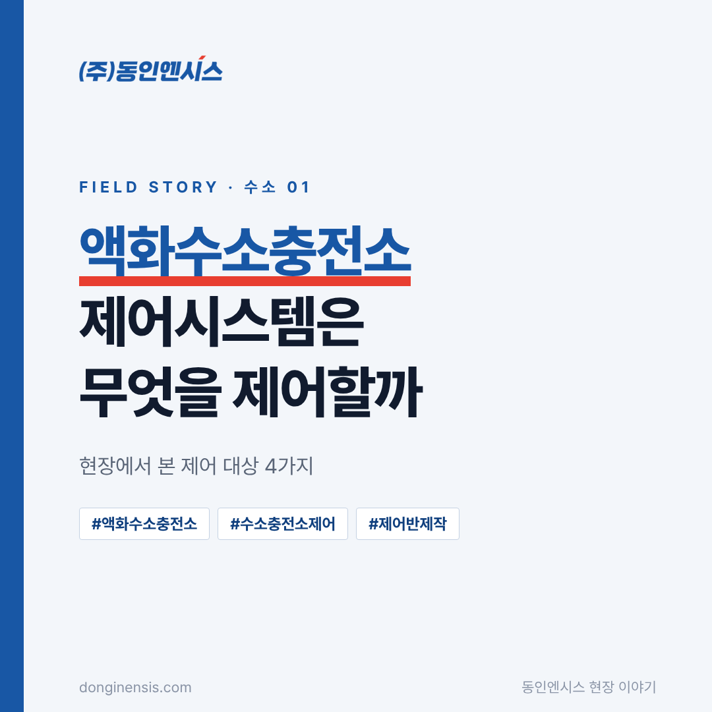
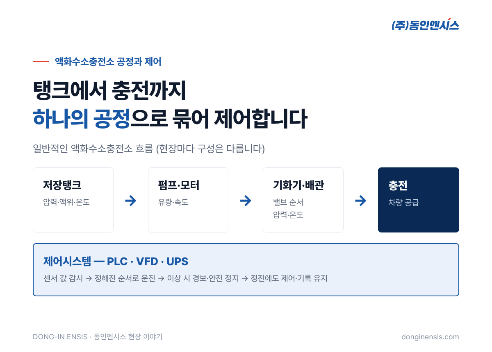
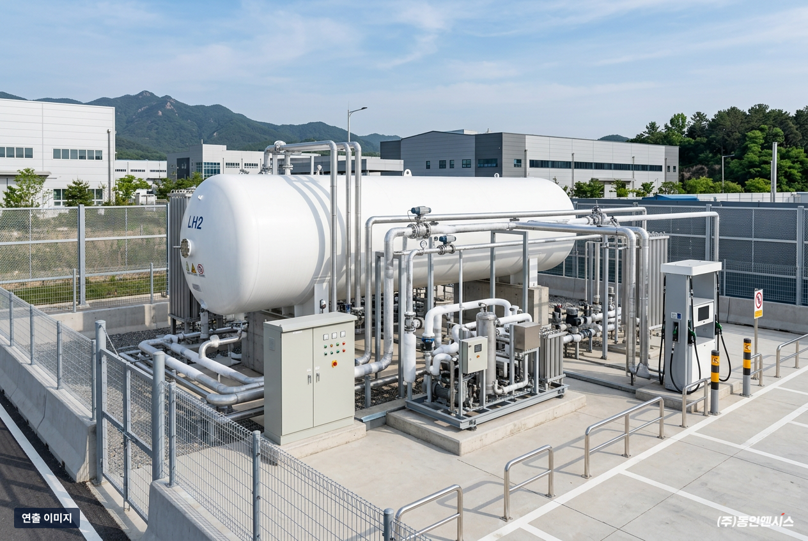
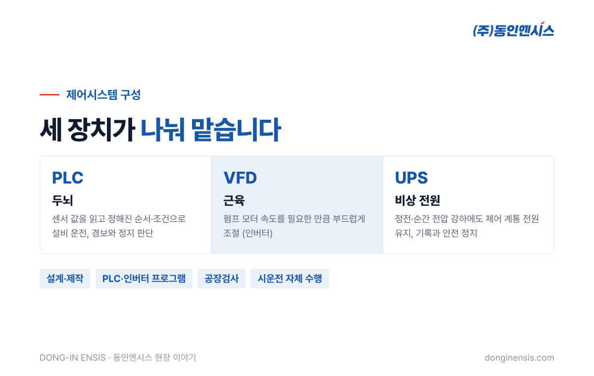
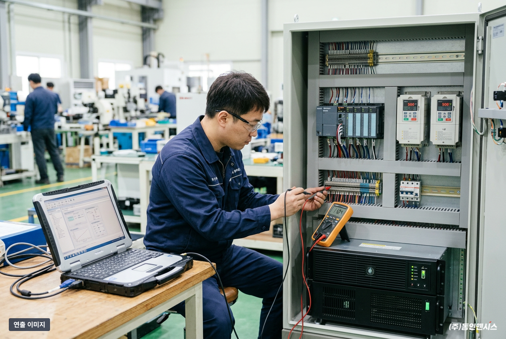

수소차 충전소라고 하면 대부분 기체 수소를 압축해 담아 두는 모습을 떠올립니다. 그런데 최근에는 수소를 아주 차갑게 식혀 액체로 들여오는 액화수소충전소가 늘고 있습니다. 이 글에서는 SK E&S 액화수소충전소에 VFD·PLC·UPS 제어시스템을 공급한 부산의 제어반 제작사 동인엔시스가, 액화수소충전소 제어시스템이 실제로 무엇을 제어하고 지켜보는지 네 가지로 나눠 소개합니다.
수소는 약 영하 253도까지 내려가야 액체가 됩니다. 액체로 만들면 같은 부피에 훨씬 많은 수소를 담을 수 있어, 한 번에 많이 운반하고 저장하기 좋습니다. 대신 이 극저온 상태를 충전하는 순간까지 안정적으로 유지해야 한다는 숙제가 생깁니다.
그래서 액화수소충전소에서는 탱크 안의 압력과 온도, 액체를 옮기는 펌프, 액체를 다시 기체로 바꾸는 기화기, 이 모든 것을 잇는 배관이 하나의 공정처럼 맞물려 돌아가야 합니다. 어느 한 곳이 어긋나면 충전을 멈추고 안전한 상태로 되돌려야 합니다. 이 판단과 순서를 쉬지 않고 맡는 것이 제어시스템입니다.

충전소 설계는 현장마다 다르지만, 제어시스템이 챙겨야 하는 대상은 크게 네 묶음으로 나눌 수 있습니다.
1. 저장탱크: 액화수소를 담아 두는 곳입니다. 탱크 압력과 액위(남은 양), 온도를 계속 읽어 정해진 범위 안에 있는지 확인합니다. 범위를 벗어나면 경보를 내고, 정해 둔 안전 절차로 넘어갑니다.
2. 펌프와 모터: 액체 수소를 다음 공정으로 보내는 펌프는 전동기로 돌아갑니다. 필요한 양만큼 정확하게 보내려면 모터 속도를 부드럽게 조절해야 하고, 이 일을 VFD(가변속 드라이브, 흔히 인버터)가 합니다.
3. 기화기와 배관: 차량에 넣기 전에 액체를 기체로 바꾸는 구간입니다. 밸브를 여닫는 순서, 배관의 압력과 온도를 함께 지켜보며 공정이 매끄럽게 이어지게 합니다.
4. 전원: 정전이나 순간 전압 강하가 생겨도 제어 장치가 꺼지면 안 됩니다. UPS(무정전 전원장치)가 제어 계통에 전원을 이어 주어, 그 사이에도 상태를 기록하고 안전하게 정지할 수 있게 합니다.

동인엔시스가 SK E&S 액화수소충전소에 공급한 것은 VFD·PLC·UPS로 이루어진 제어시스템입니다. 세 장치는 하는 일이 분명히 나뉩니다.
| 장치 | 맡는 일 | 없으면 생기는 일 |
|---|---|---|
| PLC | 센서 값을 읽고 정해진 순서와 조건대로 설비를 운전 | 사람이 일일이 판단해야 해 운전이 불안정 |
| VFD | 펌프 모터 속도를 필요한 만큼 조절 | 켜고 끄기만 가능해 유량 조절이 거칠어짐 |
| UPS | 정전 때도 제어 계통에 전원 공급 | 정전 순간 상태 기록과 안전 정지가 어려움 |
PLC가 두뇌라면 VFD는 근육, UPS는 비상 발전기에 가깝습니다. 세 장치를 한 제어반 안에 어떻게 배치하고 배선하느냐에 따라 유지보수 편의와 안정성이 달라지기 때문에, 저희는 설계부터 제작, PLC·인버터 프로그램, 시운전까지 직접 맡습니다.

이 프로젝트는 실제로 차량이 수소를 넣는 상용 충전소에서 운영 실증까지 이어졌습니다. 시험장과 달리 상용 충전소는 정해진 시간에 멈출 수 없고, 운영자와 이용자가 매일 드나드는 공간입니다.
이런 현장에서는 화려한 기능보다 기본기가 먼저입니다. 경보가 정확한 순간에 울리는지, 정전 같은 돌발 상황에서 제어가 끊기지 않는지, 운전 기록이 빠짐없이 남는지가 핵심이었습니다. 충전소 운영자가 화면 하나로 상태를 파악하고, 문제가 생겼을 때 원인을 기록으로 되짚을 수 있어야 하기 때문입니다.
이 경험은 수소 분야의 다른 일로도 이어졌습니다. 동인엔시스는 2026년 액화수소충전소 제어시스템 관련 특허 5건을 등록했고, 같은 해 수소전문기업으로 등록됐습니다. 해양수산부의 소형 수소추진선박 기술개발·실증 과제에도 참여해 통합제어·감시를 맡고 있습니다.

수소 설비용 제어반은 공장 제어반과 부품은 비슷해도, 만드는 과정에서 확인할 것이 더 많습니다. 저희가 설계와 공장검사 단계에서 특히 꼼꼼히 보는 부분은 다음과 같습니다.
이 다섯 가지는 수소 설비만의 이야기가 아닙니다. 멈추면 안 되는 설비라면 어디서나 통하는 기준이고, 지능형 제어반에도 그대로 이어지는 원칙입니다.
액화수소충전소에서 배운 것은 결국 하나입니다. 제어시스템은 설비를 움직이는 동시에, 설비가 지금 어떤 상태인지를 가장 먼저, 가장 정확하게 아는 장치라는 점입니다.
그래서 동인엔시스는 이 경험을 지능형 제어반으로 넓히고 있습니다. 설비를 제어하면서 온도·전류·진동 같은 운전 데이터를 함께 모으고, 별도 수집장비 없이 클라우드나 사내 서버로 보내는 제어반입니다. 흔들리는 선박 위와 극저온 수소 설비에서 검증한 제어 기술이, 공장 설비 데이터를 믿을 수 있게 만드는 바탕이 됩니다.
Q. 액화수소충전소 제어시스템은 일반 공장 제어반과 무엇이 다른가요? 기본 구성인 PLC·인버터·전원 장치는 비슷하지만, 극저온·고압 설비를 다루는 만큼 경보 조건과 정지 순서, 정전 대비를 훨씬 엄격하게 설계합니다.
Q. 수소충전소 말고 다른 수소 설비도 하나요? 네. 수소추진선박의 통합제어·감시, 연료전지 발전소 주변설비(BOP) 제어시스템도 수행했습니다.
Q. 이미 운영 중인 충전소의 제어반 교체나 개선도 상담할 수 있나요? 가능합니다. 현장 설비와 기존 제어반 상태를 먼저 확인한 뒤 교체 범위와 방법을 제안합니다.
Q. 충전소 운영 데이터를 원격으로 볼 수도 있나요? 현장 조건과 운영사의 보안 정책에 따라 구성이 달라집니다. 지능형 제어반 방식이라면 운전 데이터를 암호화해 클라우드나 사내 서버로 보내고, 웹 화면에서 상태를 확인하는 구조로 설계할 수 있습니다.
액화수소충전소 제어시스템은 탱크·펌프·기화기·전원을 하나의 공정으로 묶어 안전하게 돌리는 일입니다. 동인엔시스는 1991년부터 부산에서 제어반을 설계·제작해 온 경험으로 상용 충전소 실증까지 함께했습니다.
수소충전소나 수소 설비 제어를 준비하고 계신다면 홈페이지의 수소·에너지 적용 분야를 살펴보시고, 편하게 문의해 주세요.
대표전화 051-862-3668 (dongin@donginmne.com)
아래 질문 중 하나에 실제 경험으로 답해 본문 적당한 곳에 넣어 주세요. 사람이 직접 쓴 문장이 들어가면 네이버에서 저품질 위험이 줄고 노출에 도움이 됩니다.